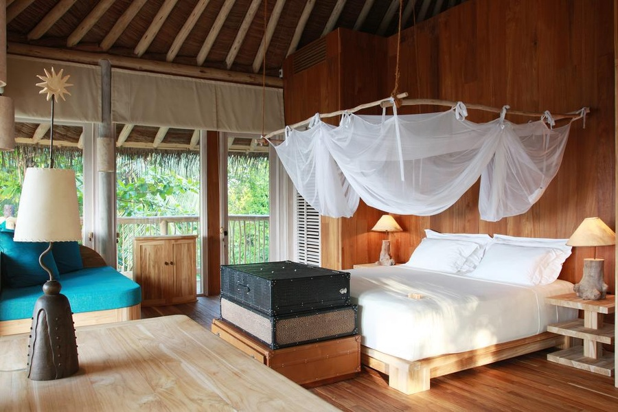

Luxury Resort in Maldives

Dreaming of white sandy beaches combined with endless shades of mesmerising blue waters, while sipping on a coconut in your very own private villa?
Welcome to the Maldives!
Whether you want to celebrate the start of a new chapter on your honeymoon in the Maldives or simply seek to unwind and relax while exploring an incredible underwater world, the atoll paradise has it all!
Get lost in browsing MaldivesResort.com curation of the Best Luxury Resorts in the Maldives – your dream holiday is only a flight away!
Soneva Fushi impressively sits amidst clear blue waters of Baa Atoll, with 57 spacious luxury villas ranging from one to nine bedrooms designs that call for barefoot luxury perfectly combined with the Robinson Crusoe simplicity. This eco-friendly luxury Maldives hotel holds their philosophy true to heart, with a “no news, no shoes” rule to ensure the utmost relaxation and comfort you can ask for. Don’t miss their unforgettable experiences such as Robinson Crusoe Castaway Picnic, Finolhu Private Sunrise, and Private Sandbank Overnight Experience among many more. Book your most perfect luxury Maldives holiday now at this down-to-earth, eco-friendly destination for an indescribable adventure! You can read our review of Soneva Fushi here.